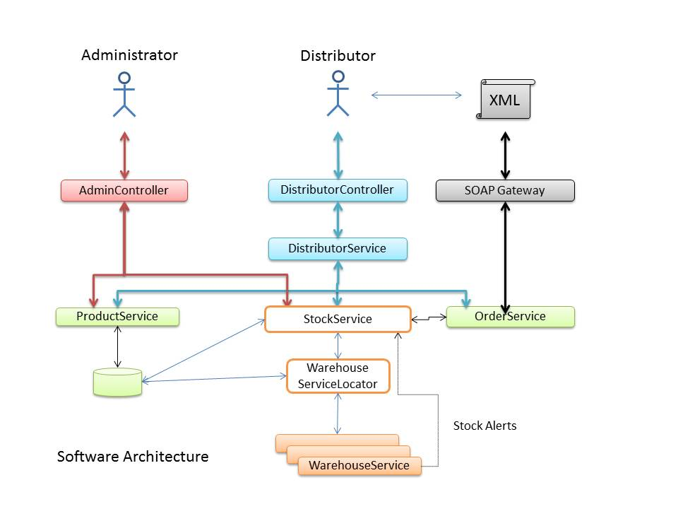
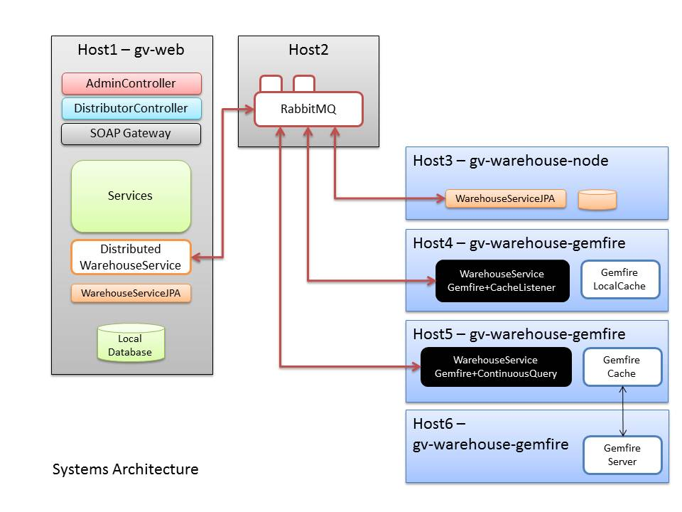

In this and subsequent blog posts I will be presenting a small project with the aim of showing how Spring Integration can be used to transparently create a distributed system.
This post describes the objectives of the project and the architectural design.
You can check out the code for this project at github: Global Vendor
The overall objective is to create a simple stock management system based on the idea of warehouses, start with a traditional implementation using a central database and then gradually evolve a distributed system. So the order will be more or less to describe:
Along the way I'll be using a variety of Spring projects and technologies in small bites, so if you haven't used them before I hope this will be a gentle introduction. Look out for Spring MVC, Spring Data JPA, Spring Data Gemfire, Spring Integration and Spring Batch.
So let's get started with a description of the 'business model' of our hypothetical Global Vendor (GV).
GV sells a variety of products to distributors throughout the world, and they have a number of warehouses in different locations. The list of products they sell is centrally managed, and warehouses are not required to hold stock of all products.
GV receives orders for products from their distributors and will fulfill an order by shipping product from one or more warehouses, starting with the warehouse with the most stock. The distributors are sent order confirmations which include a list of how many products are being shipped from each warehouse.
The rollout plan for the new system calls for a phased approach. In the first phase, all stock information for all warehouses will be maintained in a central database, and warehouse managers will update their stock levels through a central website. Distributors will be able to enter their orders manually through the website or by making a web-services request. In the second phase warehouses will be able to maintain their own local stock database, and in the final phase distributors will be able to send batches of orders for offline processing by placing order files on an SFTP server.
The overall architecture is shown in diagram 1. Interfaces of all the shaded components are specified in the gv-api project, whereas the DistributedWarehouseService is specified and implemented in the gv-core project.
The Administrator has access to a web interface which provides functionality to:
Distributors have access to a web interface which allows them to:
The SOAP Gateway provides distributors with a web-service which can be used to place orders.
Finally, the warehouses themselves may optionally provide StockAlerts which are received by the DistributedWarehouseService and logged in the local database for potential viewing by Administrators.
The second diagram - "Systems Architecture" - shows how the various implementations of the WarehouseService and other components are deployed. As you can see, I've deliberately made it as complicated as possible. If you run the code yourself it is of course possible to deploy the components in other ways. For example during testing I run the Gemfire Client and Server on Host 1.
That's it for this post. In the next post I'll talk about the core code and show how to get a simple Host 1 only system up and running.